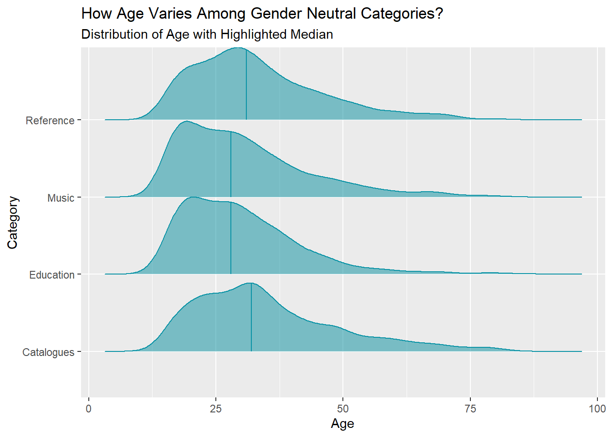
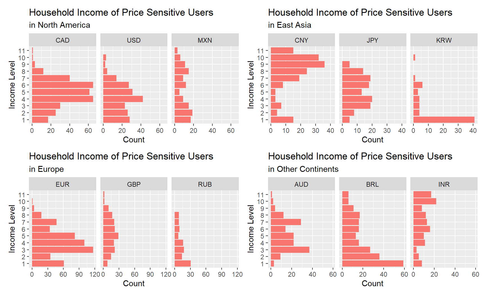

Chapter 5 Results
5.1 Analysis 1

The bar chart displays the number of users for different app store. After filtering out users who don’t have (or use) app store or didn’t answer the question in the questionnaire, we can see that among all respondents, most users use Android app store, followed by Apple iOS, Nokia, Samsung, Blackberry, Windows, and some other app stores. The distribution of user count, in general, follows the global smartphone market share. Interestingly, quite a lot of users answered ‘Not sure’ for the type of app store in this survey, and this might be due to the fact that some mobile devices support a number of operating systems or issue with rebranding (e.g. Android Market has been rebranded as Google Play) as pointed out by Lim et al in their paper “Investigating Country Differences in Mobile App User Behavior and Challenges for Software Engineering”.
As there are studies claiming that owning an Apple iPhone is now a common sign of wealth, we are interested in exploring user price sensitivity and their income level across different app stores. Considering the discrepancy between the actual number of users for each app store, we measure the proportion of different user type in the following analysis.
In our analysis, we classify respondents who chose ‘price’ as a main factor influencing app download decision as ‘price-sensitive’ and the rest as ‘not sure’. The bar chart below demonstrates the proportion of price-sensitive and non-price-sensitive (not sure) user for each app store.
The proportion of price-sensitive user is 20% higher for Apple iOS and Blackberry, implying that user purchasing behaviors for these two app stores are more likely to be affected by product price. As Android and Apple iOS are the two most used app store, we narrow our focus to these two app stores and further explore their user income level distribution.

Taking into account of socioeconomic development across countries and different currency exchange rate, Lim et al. divide income level into 11 groups while designing the questionnaire: higher group number represents higher the income level. The proportion of Apple user rises along with income level while the proportion of Android user shows an inverse pattern: the proportion of Apple user is approximately 20% higher in level 11, and the proportion of Android user is about 60% higher in level 1.
Considering the massive global market share of Android and local brand dominance (e.g. Apple has market share lead over Android in North America), we create a bar char of user proportions for Android and iOS faceting by user nationality to investigate whether user income pattern is a global trend.
Potentially due to Apple’s brand power and brand awareness, in most North American countries, there are clusters of iOS users in higher income level, while in European countries, the pattern is less lopsided. On the other hand, Android user dominates all income groups in countries such as India, Russia, and South Korea since in those countries brands such as Samsung and Xiaomi have a higher brand awareness.
5.2 Analysis 2

The gender of respondents is approximately evenly distributed between male and female, and a large number of people didn’t specify their gender. Therefore, we will ignore those users in our following analysis about gender-neutral app categories and their relationships to user demographic information such as age, nationality, and educational background.


To find gender-neutral app categories, we first calculate the difference between the number of male user and female user for each app category. If the number of male user is greater than the number of female user, then the category is classified as male-dominated category with a magnitude measured by the absolute value of the difference. We define female-dominated category in a similar fashion. The categories are then sorted by magnitude in ascending order, with more gender-neutral categories showing up on top and more gender-dominated categories at the bottom. We pick the top 4 most gender-neutral categories and analyze the distribution of user demographic data in the following section.
5.2.1 Gender-neutral categories and their relationships to user demographic information
As the number of users across countries varies, we compute the percentage of users for each gender-neutral category within each country. Clearly, music app has gain popularity from both male and female users regardless of nationality. The pattern of user proportion by category is almost the same except for France and Germany. The second most popular gender-neutral category is Catalogues in France and Reference in Germany. Users from India are more likely to download educational apps compared with users from other countries. Cultural difference certainly plays an important role, and developers face the challenge of incorporating insights from countries and cultural differences in feature selection for their apps.

The distribution of age is approximately the same for all gender-neutral categories, and Music and Education attract more younger users. There are new perspectives regarding continuing education, and a small number of respondents claimed they have 80 years of education. However, for analysis purpose, we consider those responses as outlier and remove them using \(\pm 1.5\times IQR\) as the threshold. The distribution of years of education also show similar pattern across categories.
5.3 Analysis 3
5.3.1 Income Distribution of Price-sensitive Users

Here we are going to analyze the incomes based on the pre-divided intervals as well. Incomes are displayed in order of highest to lowest level on the y-axis (from top to bottom). For uses in the North America, there are similar distributions (close to normal) for CAD (Canada Dollar) and USD (US Dollar), while Mexican incomes appear to be more evenly distributed. CNY (Chinese Yuan) users’ incomes are clustered in a higher level. Incomes in JPY (Japanese Yen) mainly range from level 3 to 8, with no data in the highest level of 10 and 11. Most of the Korean respondents seem to be students from our guess since lots of them earn the lowest level of income. In Europe and other continents, number of the price-sensitive using EUR and BRL (Brazilian Real) appears to be larger than other countries and most observations are clustered under level 5, but for INR (Indian Rupee), there are more people having higher incomes. Overall we can see that income distributions differ a lot in each country.
5.3.2 Reasons why people download apps they spent on

For both types of users, many answered “game(s)” (“angry birds” in particular) and an upgrade of “pro” version as the reasons why they downloaded the apps that they had in-app purchase in. Price-sensitive users (word cloud on the left) also spent money on “zombie” type of mobile games. Another obvious pattern for the price-sensitive is that they “can’t remember” the reasons for downloading apps but they do remember they’ve spent money on those apps. In the meanwhile, people that are not as price-sensitive (word cloud on the right) purchased “google” and “office” products essential for business or study.
5.3.3 Why did people pay?
Most people do not pay for apps. Among users who spend on apps, many chose “No similar free app”, “For additional features or contents” in a paid app and “For features” in an initially free app as the top reasons why they purchase. Another interesting reason is that people think “paid apps have better quality/more features than free apps in general”. These popular reasons would be a great guidance for app developers: they should at least meet the user expectation that the apps cost more must have more features or quality contents available. In addition, price-sensitive users usually pay for an app when it “is on sale”. So sales promotions are a good choice for developers to pitch their apps to potential users.